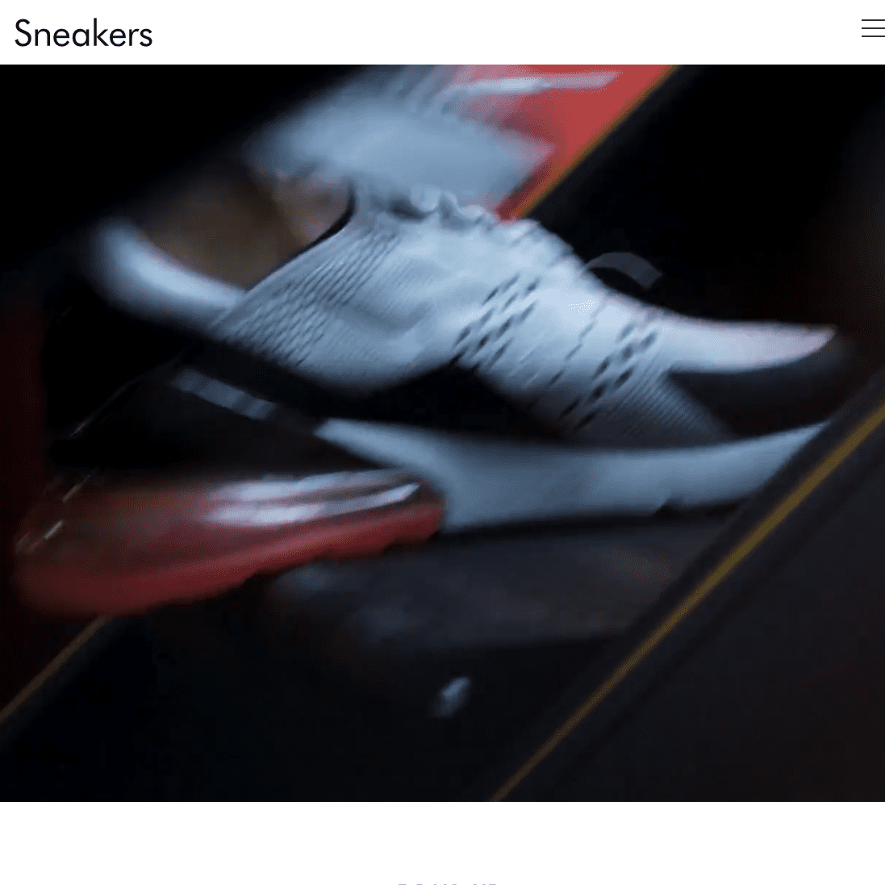

【HTMLCSS コーディング練習】上級編：メディアサイト／グリッドレイアウト  Codestepの「【HTMLCSS コーディング練習】上級編：メディアサイト／グリッドレイアウト」に公開されているものから模写しました。（https://code-step.com/media-menu/） URL https://kgt-81.github.io/code-step_media-menu/ Works一覧へ